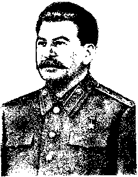

J. V. STALINSPEECH
|  |
page 5
(The appearance of Comrade Stalin on the rostrum is greeted with loud and long continuing applause and cheers. All rise. Cries of "Hurrah for Comrade Stalin!" "Long live Comrade Stalin!" "Glory to our great Stalin!" )
Comrades, permit me to express the gratitude of our congress to all the fraternal parties and groups whose representatives have honoured our congress with their presence, or who have sent greetings to the congress -- gratitude for their friendly felicitations, for their wishes of
page 6
success, for their confidence. (Loud and prolonged applause and cheers.)
It is their confidence that we particularly prize, for it signifies readiness to support our Party in its struggle for a brighter future for the peoples, in its struggle against war, its struggle for the preservation of peace. (Loud and prolonged applause.)
It would be a mistake to think that, having become a mighty force, our Party is no longer in need of support. That is not true. Our Party and our country have always needed, and will need, the confidence, the sympathy and the support of fraternal peoples abroad.
The distinguishing feature of this support is that whenever any fraternal party
page 7
supports the peaceable aspirations of our Party, it is at the same time supporting its own people in their struggle for the preservation of peace. When, in 1918-19, at the time of the armed attack of the British bourgeoisie on the Soviet Union, the British workers organized a struggle against war under the watchword of "Hands off Russia!" this was support -- support, primarily, for the struggle of their own people for peace, and support also for the Soviet Union. When Comrade Thorez or Comrade Togliatti declare that their peoples will not fight the peoples of the Soviet Union (loud applause ), that is support -- support, primarily, for the workers and peasants of France and Italy who are fighting for peace, and support also for
page 8
the peaceful aspirations of the Soviet Union. This distinguishing feature of mutual support is to be explained by the fact that the interests of our Party do not contradict, but, on the contrary merge with the interests of the peace-loving peoples. (Loud applause.) As to the Soviet Union, its interests are altogether inseparable from the cause of world-wide peace.
Naturally, our Party cannot remain indebted to the fraternal parties, and it must in its turn render support to them and also to their peoples in their struggle for emancipation, and in their struggle for the preservation of peace. As we know, that is exactly what it is doing. (Loud applause.) After our Party had assumed power in 1917, and after it had taken
page 9
effective measures to abolish capitalist and landlord oppression, representatives of the fraternal parties, in their admiration for the daring and success of our Party, conferred upon it the title of "Shock Brigade" of the world revolutionary and labour movement. By this, they were expressing the hope that the successes of the "Shock Brigade" would help to ease the position of the peoples languishing under the yoke of capitalism. I think that our Party has justified these hopes, especially so in the Second World War, when the Soviet Union, by smashing the German and Japanese fascist tyranny, delivered the peoples of Europe and Asia from the menace of fascist slavery. (Loud applause.)
page 10
It was very hard, of course, to perform this honourable mission so long as ours was a single and solitary "Shock Brigade," so long as it had to perform this mission of vanguard almost alone. But that was in the past. Today the situation is quite different. Today, when from China and Korea to Czechoslovakia and Hungary, new "Shock Brigades" have appeared in the shape of the People's Democracies -- now it has become easier for our Party to fight, ay, and the work is going more merrily. (Loud and prolonged applause.)
Those communist, democratic, and workers' and peasants' parties which have not yet come to power and are still working under the heel of bourgeois draconic laws are deserving of particular attention.
page 11
For them, of course, the work is harder. But it is not as hard for them to work as it was for us, the Russian Communists, in the period of tsarism, when the slightest movement forward was declared a severe crime. However, the Russian Communists stood their ground, were not daunted by difficulties, and achieved victory. So it will be with these parties.
Why will it not be so difficult for these parties to work as it was for the Russian Communists in the period of tsarism?
Firstly, because they have before their eyes such examples of struggle and achievement as are to be seen in the Soviet Union and the People's Democracies. Consequently, they are in a position to learn
page 12
from the mistakes and achievements of these countries and thus lighten their own work.
Secondly, because the bourgeoisie the chief enemy of the emancipation movement -- has itself become different, has changed substantially, has become more reactionary, has lost its ties with the people, and has thereby weakened itself. Naturally, this circumstance too should lighten the work of the revolutionary and democratic parties. (Loud applause.)
Formerly, the bourgeoisie could afford to play the liberal, to uphold the bourgeois-democratic liberties, and thus gain popularity with the people. Now not a trace remains of this liberalism. The so-called "liberty of the individual" no
page 13
longer exists -- the rights of the individual are now extended only to those who possess capital, while all other citizens are regarded as human raw material, fit only to be exploited. The principle of equal rights for men and nations has been trampled in the mud; it has been replaced by the principle of full rights for the exploiting minority and no rights for the exploited majority. The banner of bourgeois-democratic liberties has been thrown overboard. I think that it is you, the representatives of the communist and democratic parties, who will have to raise this banner and carry it forward, if you want to gather around you the majority of the people. There is nobody else to raise it. (Loud applause.)
page 14
Formerly, the bourgeoisie was regarded as the head of the nation; it upheld the rights and independence of the nation and placed them "above all else." Now not a trace remains of the "national principle." Now the bourgeoisie sells the rights and independence of the nation for dollars. The banner of national independence and national sovereignty has been thrown overboard. There is no doubt that it is you, the representatives of the communist and democratic parties, who will have to raise this banner and carry it forward, if you want to be patriots of your country, if you want to become the leading force of the nation. There is nobody else to raise it. (Loud applause.)
That is how matters stand today.
page 15
Naturally, all these circumstances should lighten the work of the communist and democratic parties which have not yet come to power.
Consequently, there is every reason to count upon the success and victory of our fraternal parties in the lands where capital holds sway. (Loud applause.)
Long live our fraternal parties! (Prolonged applause.)
May the leaders of our fraternal parties live and flourish! (Prolonged applause.)
Long live peace among nations! (Prolonged applause.)
Down with the warmongers! (All rise. Loud and long continuing applause and cheers. Cries of "Long live comrade Stalin!" "Hurrah for Comrade Stalin!" "Long live
page 16
the great leader of the working people of thee world, Comrade Stalin!" "Hurrah f or our great Stalin!" "Long live peace among nations!" Cheers.)